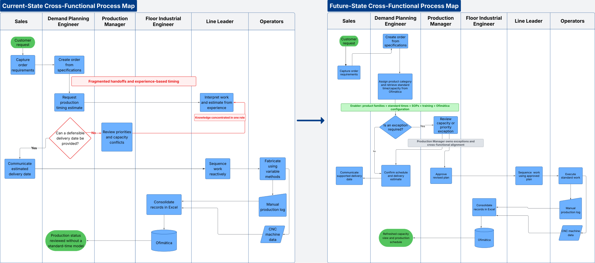
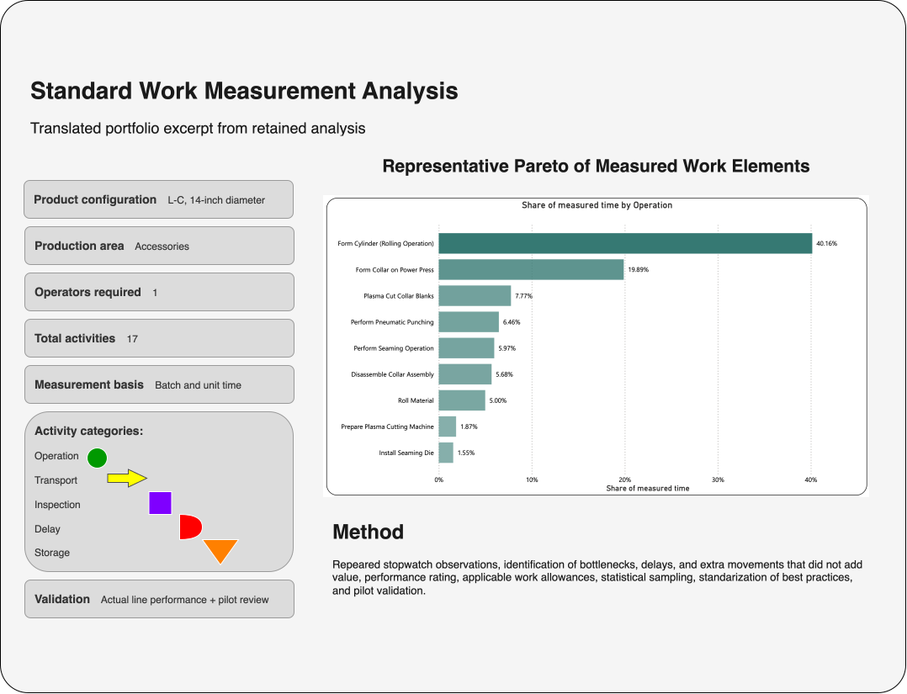
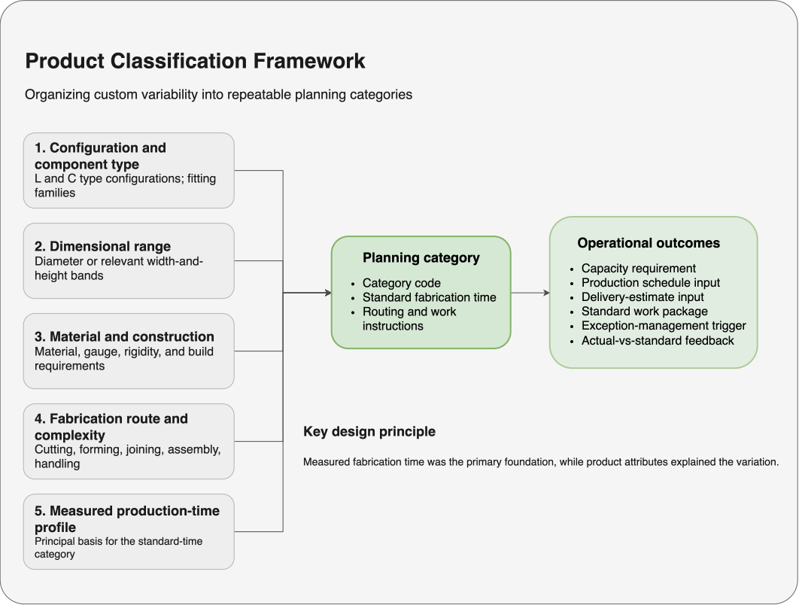
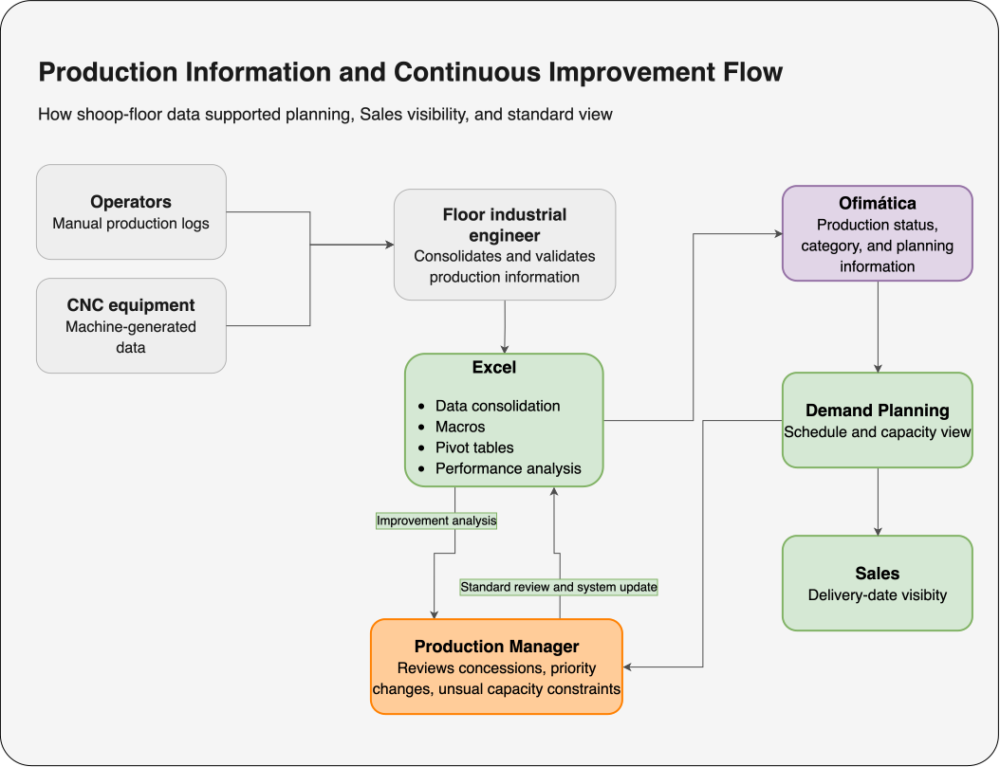

Sales could not consistently provide defensible delivery dates for custom ductwork because production variability was not translated into engineered timing standards or visible capacity information. Routine estimates depended heavily on the line leader's experience.
I led the investigation, measurement strategy, classification design, pilot sequence, cross-functional coordination, standard-work development, training, and business requirements for the Ofimática system changes.
I worked one level below the Director of Operations for approximately 18 months. This initiative ran alongside other Lean, Kaizen, logistics, painting, production, and workforce-capacity improvement projects.
As Production Manager, I oversaw daily execution and continuous improvement across two production floors:
I also determined when production services or labor should be subcontracted.
My role: operational owner and project lead. I performed most of the investigation, analysis, process design, meeting coordination, pilot planning, and implementation support.
Technology partner: the IT Director. The programming team implemented the approved changes in Ofimática; I defined and coordinated the operational requirements.
Operational contributors: demand planning, floor industrial engineers, production supervisors, line leader, operators, Sales, Logistics, and the Director of Operations when validation or decisions were required.
Defined the delivery-estimation problem, project scope, sponsor, stakeholders, and operational stakes.
Designed the Gemba investigation, measurement plan, stakeholder meetings, classification logic, and pilot sequence.
Conducted studies, created standards, developed SOPs and videos, trained teams, and coordinated Ofimática changes.
Compared calculated baselines with actual performance, reviewed pilots, and adjusted methods and standards.
Transferred ownership into routine planning, documented the process, and established ongoing performance feedback.
Custom ductwork varied by configuration, dimensional range, material and construction requirements, fabrication route, and complexity. Production did not have a consistent way to translate those differences into category-level standard times and capacity requirements.
Sales relied on the line leader to interpret each order, assess current workload, and provide an experience-based date. The dependency slowed customer responses, limited visibility, and made routine delivery commitments difficult to support consistently.
Using Genchi Genbutsu - "Go and See" - I began by studying the actual work. During the first week, I spent approximately five hours per day on the shop floor; the concentrated investigation continued for roughly three to four weeks.


Representative translated exhibit derived from a retained work-measurement file. Selected labels are generalized for portfolio readability.
Representative configurations were decomposed into discrete operations and supporting activities. The production supervisors and I collected repeated stopwatch observations across relevant product and diameter ranges, including material-handling and transportation time as separate categories.
Observed times were evaluated using statistical sampling, performance ratings, and applicable fatigue and personal allowances. Calculated baselines were compared with actual line performance, reviewed against takt and capacity requirements, and tested through controlled pilots.

I converted product variability into a structured planning model. The historical system contained more than four categories and used a combination of:
Standardization redistributed decision authority and initially raised concerns about workload and job security. I used phased pilots, employee participation in validation, extensive training, video-supported instructions, direct communication, and broader improvements to incentives and benefits to support adoption. The categories entered operational use immediately, followed by a learning curve. Within the next few months, the process operated with substantially less friction and less dependence on informal explanations.

Before: A custom L- or C-type fitting entered planning. The planner needed the line leader to interpret the product, assess workload, and provide an experience-based date.
After: The planner identified the applicable category using configuration, dimensions, construction requirements, and fabrication route. The associated standard time and capacity requirement supported a delivery window visible to Sales.
Exception: I became involved when a concession was requested, priorities shifted, the product fell outside established categories, or capacity required subcontracting.